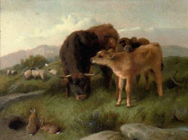

Bava Batra 124 - Limitations to the Double Portion of the Firstborn

What is the status of the benefits that accrue to the father's estate after his death but before the division, such as a calf born of a cow in the estate, or a loan repaid to the estate?
Rabbis : the firstborn does not take the double portion of that;
Rebbi : the firstborn takes a double portion of those benefits that happen automatically, but not those that the orphans brought to the estate through their actions.
What are their arguments?
Rabbis : the expression "... to give him the double portion ..." compares the double portion to a gift. Just as a gift cannot be given unless it has come into the donor's possession, so does the double portion include only present assets.
Rebbi : the words "... double portion ..." make the law for both portions the same, to include future automatic benefits.
George W. Horlor - Cattle, Sheep and Rabbits on a hillside